Segmentering
Vi har i vores projekt taget højde for at vores brugere er familier med skolebørn. Dette har vi uddybet ved at finde frem til en række af geo- og demografiske forhold. Herunder ses en tabel af fællestræk som vores målgruppe har eller kan have.
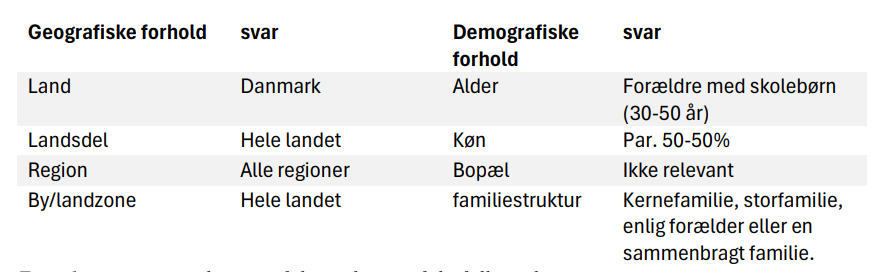
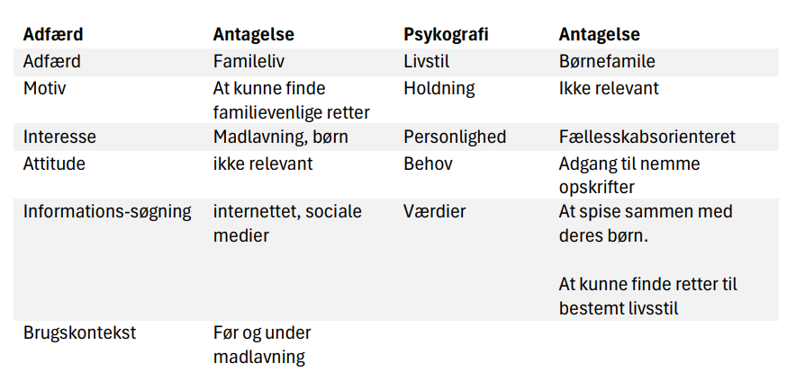
Kvalitative interviews
For at kunne sammen knytte vores projekt med vores brugergruppe udarbejder vi en interviewguide til at kunne udføre en række af kvalitative interviews. Vores formål med dette interview er at vide hvordan vores brugere benytter opskrifter i deres hverdag. Ud fra dette formål har vi en hypotese omkring at det kan være svært at finde opskrifter baseret på de krav man har som familie. Ved hjælp af vores hypotese har vi udformet en række af undersøgelsesspørgsmål som vi vil have svaret på. Dette gør vi for at skabe en bedre forståelse for hvilke krav vores brugergruppe har til opskrifter. Den data vil vi udnytte til at kunne opstille informationsarkitekturen til Foodista.
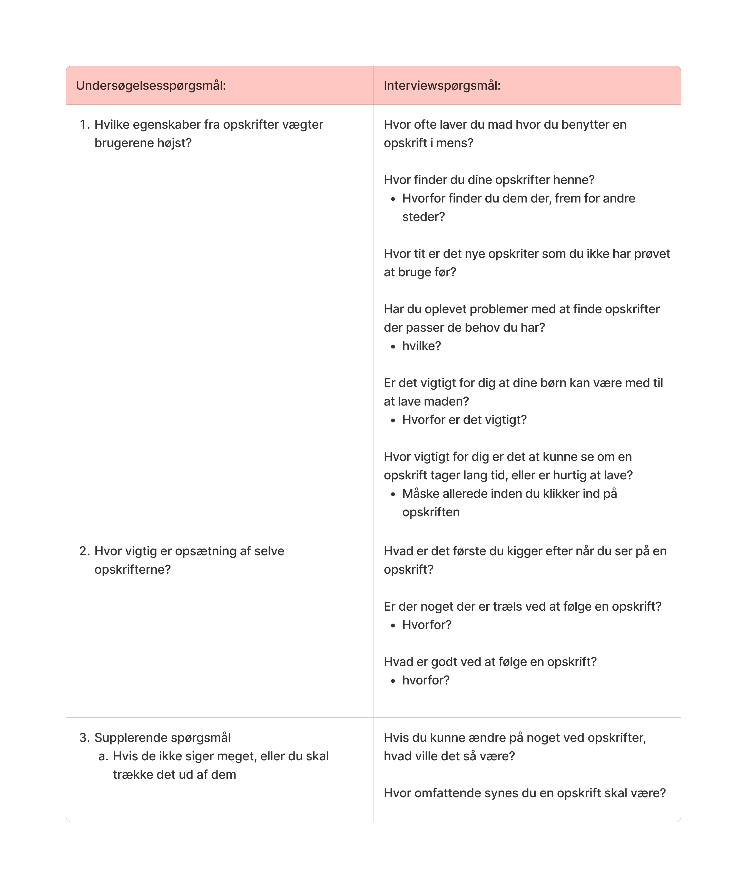
Tematisk analyse af interview
Efter at have udført vores interviews har vi hver især sat os og fundet en liste af forskellige ligheder der opstod i vores interview. Altså en tematisk analyse. Vi havde en del temaer der gik igen. Oversigten over de temaer vi så mest hyppigt er som set herunder, inklusion af børn, opskrift problemer, udforskning og gode egenskaber.
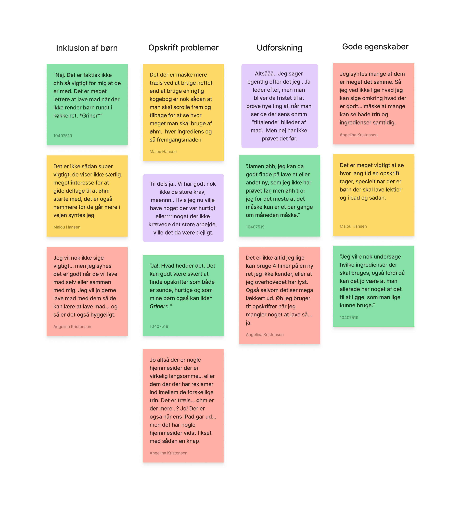
Det første tema vi har til venstre er inklusion af børn. På trods af det fælles tema er svarende faktisk en smule forskellige. Alle mener ikke at det er en vigtig kvaligtet at børn skal være med til madlavningen i køkkenet. To af dem mener i det hele taget at det faktisk er nemmere uden sine børn.
Det andet tema og også vores mest hyppige tema er omkring problemer i sin opskrift. Der er flere der oplever forskellige problemer med deres opskrift. Der er nogle der kæmper når det kommer til den mere teknologiske side af opskrifter.
To andre har andre meninger, hvor der dog stadig er problematik men hertil nærmere relateret til opskrifternes indhold fremfor hvordan indholdet er udnyttet. På trods af de problematikker der var, var der også gode ting. Der er her vi trækker vores tema omkring gode egenskaber ud. For en af dem er det vigtigt for dem at kunne se hvor lang tid det tager at lave en bestemt ret baseret på de krav som de har ud fra deres daglige planlægning. Nogle andre har mere fokus på hvor nemt det er at finde frem til ingredienser. F.eks bliver det nemt at det er noget af det første de kigger efter siden det kan være man allerede har ting til det.
Disse interviews har givet os en forståelse for hvordan brugerne egentlig udnytter opskrifter. Det vil sige flere forskellige medier og ikke kun online opskrifter, men de begrænser sig dog ikke til det. Ligeledes er vores hypotese ikke helt ude på bar bund men heller ikke helt korrekt. Der er mange der sagtens kan finde opskrifter baseret på de krav som de har, dog kan det også være træls til tider når de søger noget specifikt. Der skal derfor være fokus på opsætning af vores indhold så de krav som vores brugere havde kan blive opfyldt gennem dette.
brainstorm
Herefter ville brugte vi vores viden fra analysen til at finde ud af hvilke egenskaber produktet skulle have. Her træk vi nogle af de krav fra vores interview personer frem, samt tog inspiration fra hjemmesider nævnt af vores interview personer. Ud fra dette lavede vi en lille brainstorm over de mulige ting som produktet kunne have gavn af.
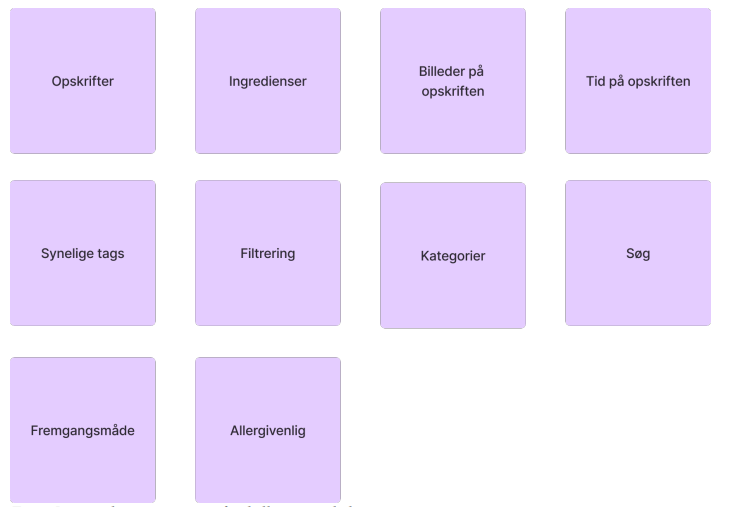
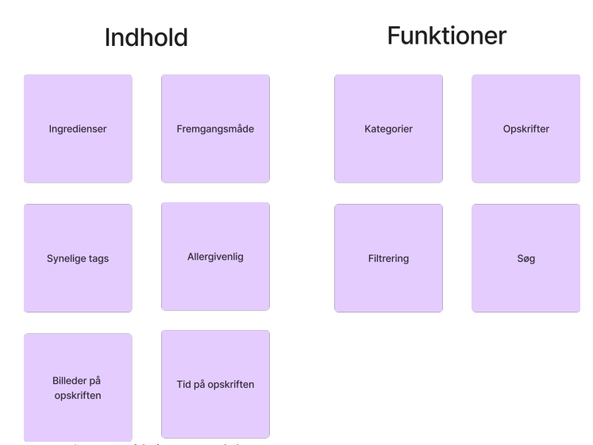
For at danne overblik over hvad der hænger sammen med hvad indelte vi disse ind i to grupper. Funktion og indhold. Begge grupper kan ses herunder. Indhold dækker over de egenskaber som vores brugere og egen researcher peger på er vigtigt i en opskrift.
Opsætning af indhold
Processen af at opsætte vores indhold har været en række af beslutninger vi har truffet op baggrund af vores affinity diagram, vores data og vores forståelse af brugeroplevelse. Denne opsætning gjorde vi i form af et content sitemapHer havde vi fokus på at inddrage nogle af Dan Browns principper for informations arkitektur. Specifikt ville vi gerne have fokus på følgende principper - Front doors - Multiple classifications Til første princip inddrog vi nogle af de gamle funktioner fra foodista men implementerde også vores egne. Vi præsenterer de her front doors i form af CTA knapper og focused entry points. For princippet omkring multiple classifications har vi inkluderet en lokal navigation, samt fokus entry points. Udover det har vi også tilføjet muligheden for at kunne filtrere gennem opskrifter. Skulle brugeren foretrække at søge, er der også mulighed for det i den globale navigation.
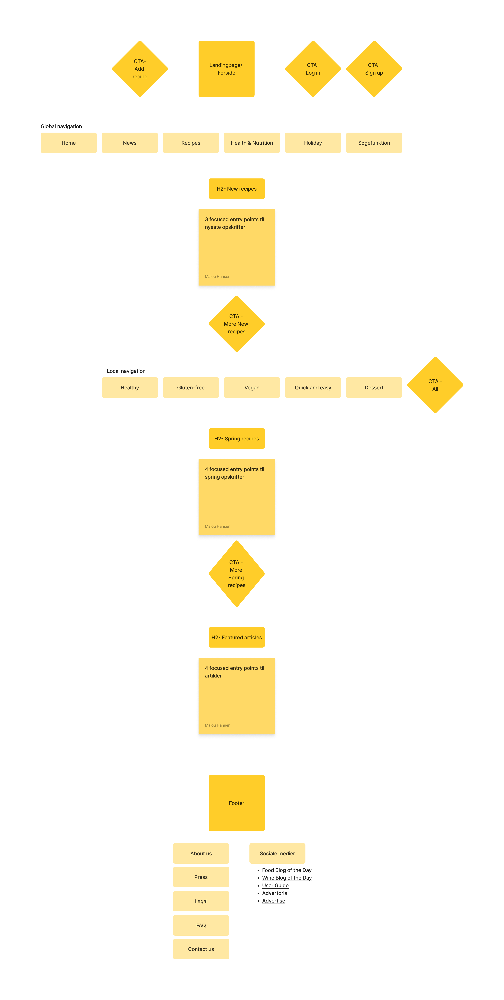
Moodboard
Vi havde alle i tankerne at vi ville arbejde med nogle af de farver som Foodista selv havde men med en mindre twist. Vi lagde mærke til et mønster i nogle af opskrifterne på siden, hvilket var at der var en god mængde der havde fokus på sundhed. Det ville vi at inkorporere i vores design og valgte derfor at fokusere på sundhed og sund mad. Derfor har vi valgt at arbejde med en frisk grøn farve og lidt dertil, eftersom grøn ofte er associeret med sund mad.
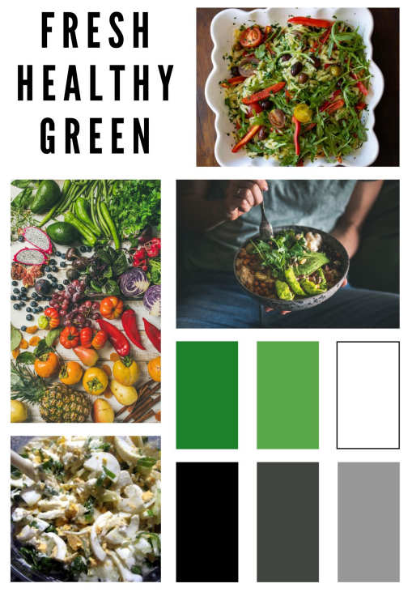
Low-fidelity skitser
Vores første design prototyper tog sig i form af low-fidelity skitser. Dette blev gjort med den gode gamle papir og blyant. Eftersom at vi kun skal have fokus på en desktop optimeret site havde vi fokus på at designe kun til dette. Her havde vi også fokus på et af Dan Browns principper, exemplars. Vi ville gerne fremhæve billeder af opskrifter for brugeren, så brugeren kunne se præcis hvad hver opskrift indeholder.
Low-fidelity wireframes
Vi processen over i Adobe XD og videre byggede designet over i low-fidelity wireframes. Vi valgte at forholde os til low-fidelty til vores wireframes eftersom vi ville holde fokus på layout. Derfor var fokus på opsætningen af vores elementer. Det vil sige at vi havde fokus på blandt andet gestalt love. Specifikt havde vi fokus på loven om nærhed og loven om lighed. Herunder kan en wireframe af vores forside ses, hvor vi har særligt fokus på loven om nærhed i forhold til blandt andet sammenhængen mellem billederne og billedtitlerne.
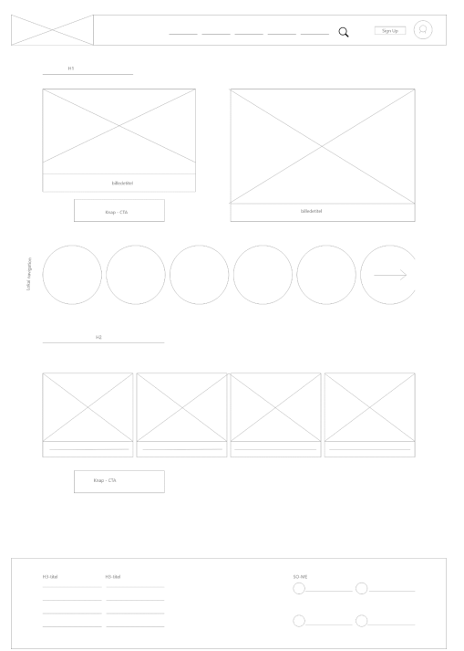
High-fidelity mockup
Efter udarbejdelsen af vores wireframes var det muligt at producere en high-fidelity prototype. Dette gjorde vi i form af mockups. I vores wireframes havde vi observeret at der var mange af vores elementer der var centeret uden at de var nødvendigt. Derfor fortsætter vi og holder fokus på at opnå god farve kontrast, visuelt hiarki og godt layoutDa vi endelig indsætter vores indhold, opdager vi en række af mindre problemer der kræver optimering i vores design. Et af disse problemer var blandt andet at vores side der skulle fremvise et opskrifteksempel, havde to kolonner, en til ingredienser og en til trin. Vi flyttede det rundt til at stå over hinanden i stedet for.

Think aloud test
I forbindelse med usability testing, har vi valgt at opstille et testscript hvor vi under vores think-aloud test bad vi deltagerne om at udføre specifikke opgaver på vores side, mens de tænkte højt. Formålet var at identificere potentielle usability-udfordringer og forstå brugerens oplevelse og tankegang under udførelsen af opgaverne. I vores design var der 4 ting vi ville have vores brugere til at finde
- Om de kunne finde kategorien ”Quick and Easy”
- Om de kunne navigere frem til afsnittet ”Diabetes og Diabetic”
- Om de kunne finde siden med filterering
- Om de kunne finde frem til afsnittet omkring Easter
usability rapport
Efter testing af vores design har vi fundet frem til at vores design ikke har mange fejl når det kommer til usability. Nogle af brugerne nævner endda direkte at de følte siden var nem at navigere og nem at forstå. For at kunne klart vurdere vores testresultater sammen opsatte vi usability rapports, der skabte overblik over vores resultater. En af vores testpersoner nævnte det ikke direkte i forhold til test scenerierne men i stedet mumlede at de ikke vidste artiklen på siden omkring diabetes var en artikel. Vi undersøgte hvad vi kunne gøre for at ændre dette og kom frem til at vi stadig kunne beholde artiklen ved dens nuværende placering, men at formatet skulle ændres en smule, som set på rapporten herunder

Headless CMS
Under projektet har det været fokus på især JavaScript, Wordpress og RESTapi. Der har været oprettet et website, hvor vi har gjort brug af wordpress til at lave det meste af projektets indhold. Det er gjort ved at oprette POSTS igennem wordpress, ved brug af et plugin, AFC, som giver flere muligheder for brugerns back-end muligheder. Der er brugt JS til at fetche data fra wordpress API'et. Som ses på bilaget nedenunder, er det en funktion getToken(). Denne funktion bruges til at få fat på en token, som gemmes i sessionstorage. Det vil sige at der skal kaldes en getToken() for at få lov til at kunne fetche private POSTS fra vores wordpress.
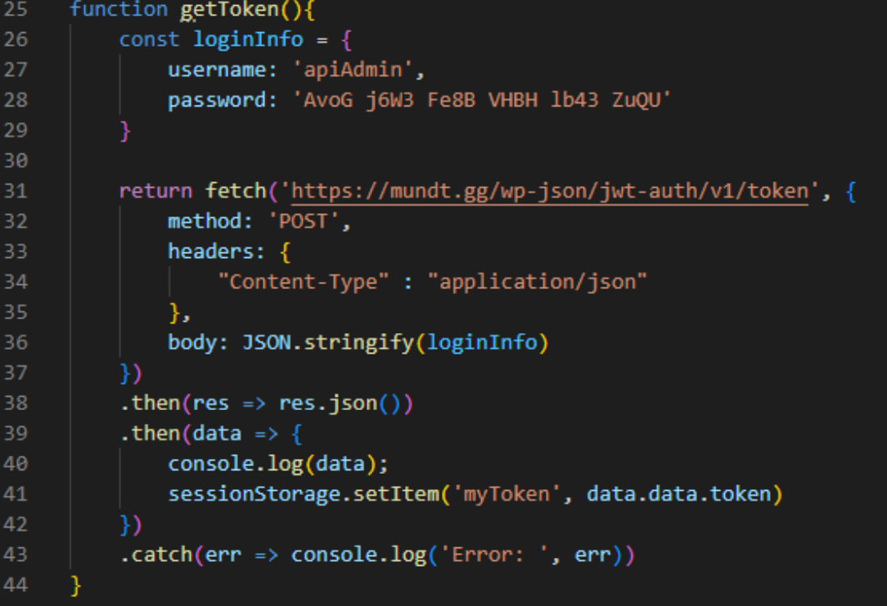
DOM manipulation
Vi har mange steder gjort brug af DOM manipulation så vi har kunne generere dynamisk indhold på siden. Dette gentages for hver opskrift, der sendes til funktionen, og vi ender derfor med en samling af viste opskrifter, som brugere kan se og interagere med på websiden.
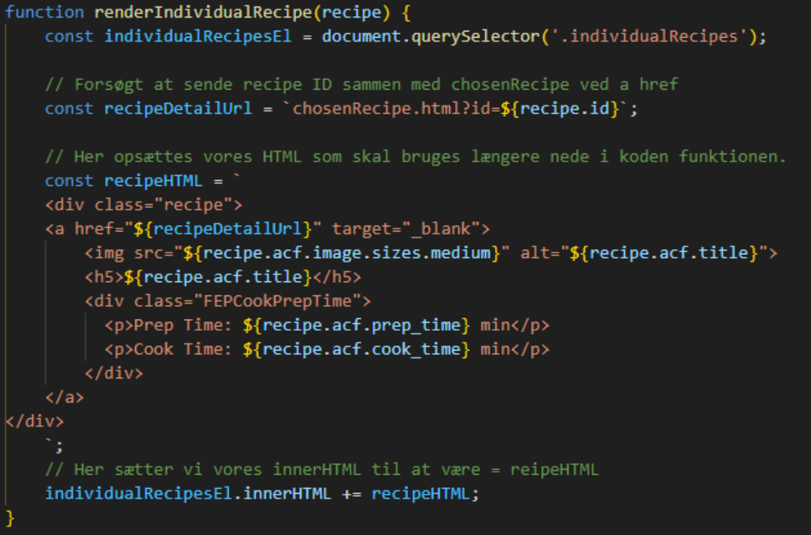
Udviklingen af dette produkt opfyldte de krav vi selv havde sat og de krav vi fik udleveret. Det er klart at der er en del mangler i forhold til både CSS og Java Script. Vi har i nogen grad været lidt optimistiske med hvad vi mente var opnåeligt inden for den afsatte tidsramme for projektet. Vores endelig produkt har en klar udveksling af data via API og vi har gjort brug af metadata ved, at inddele diverse opskrifter fra wordpress i forskellige taxonomier. Der er bl.a. gjort brug af taxonomier såsom; tags, diets, cook time og mere.